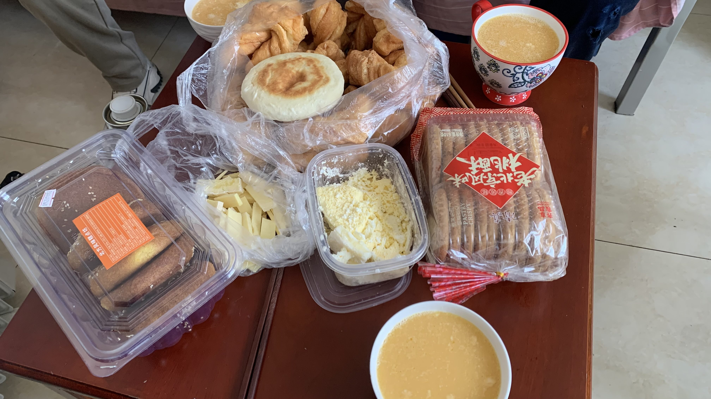
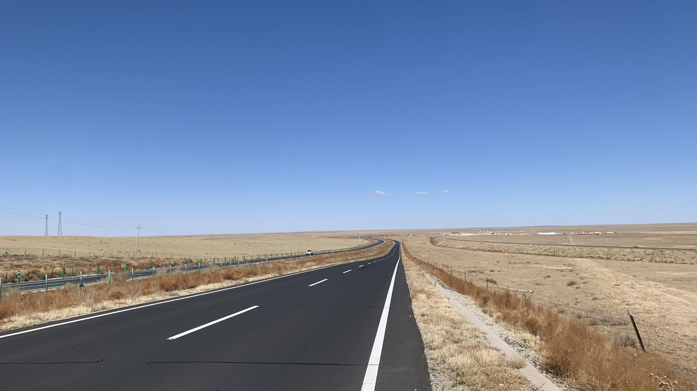
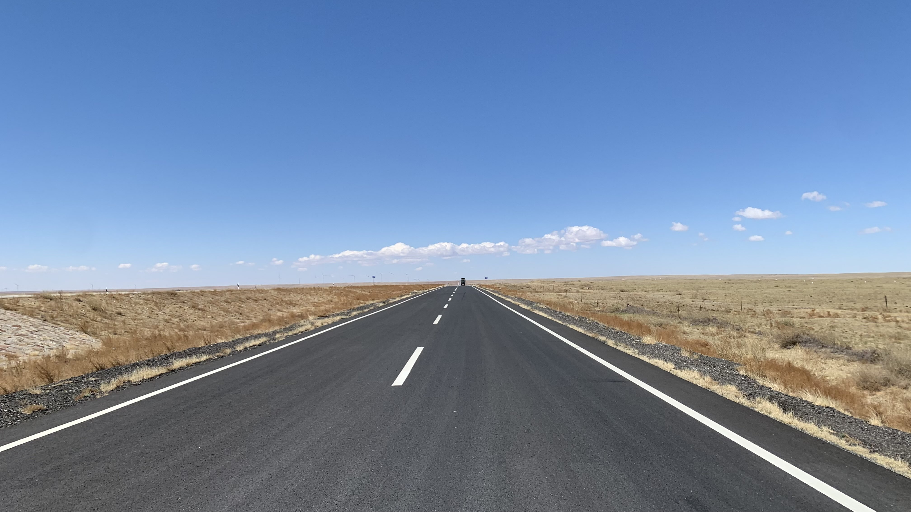
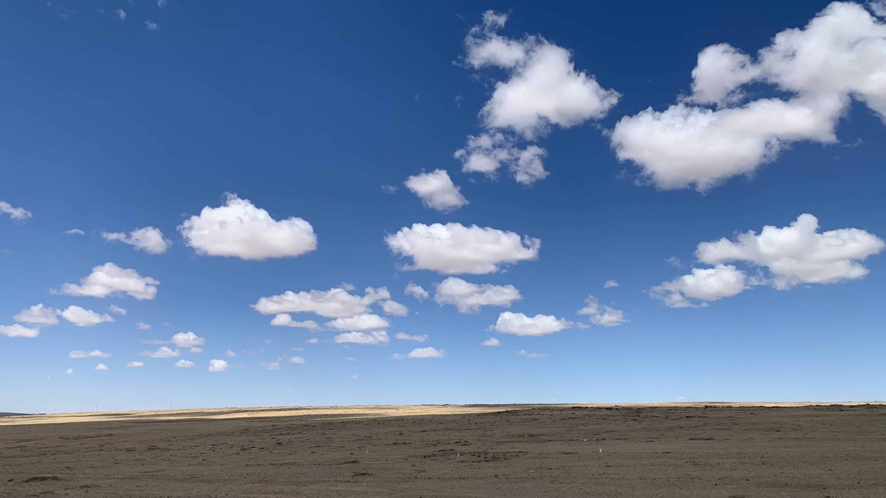
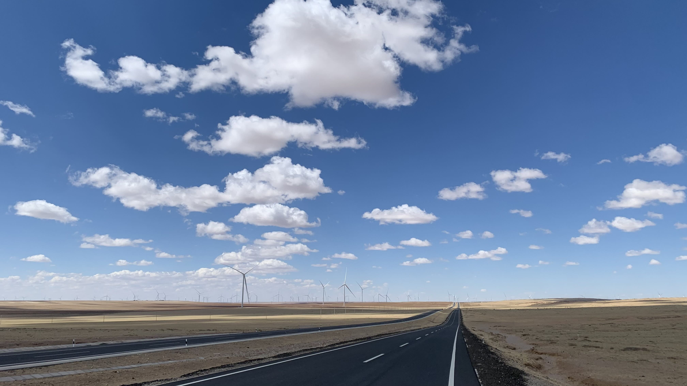
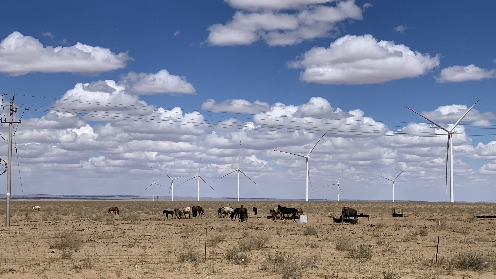
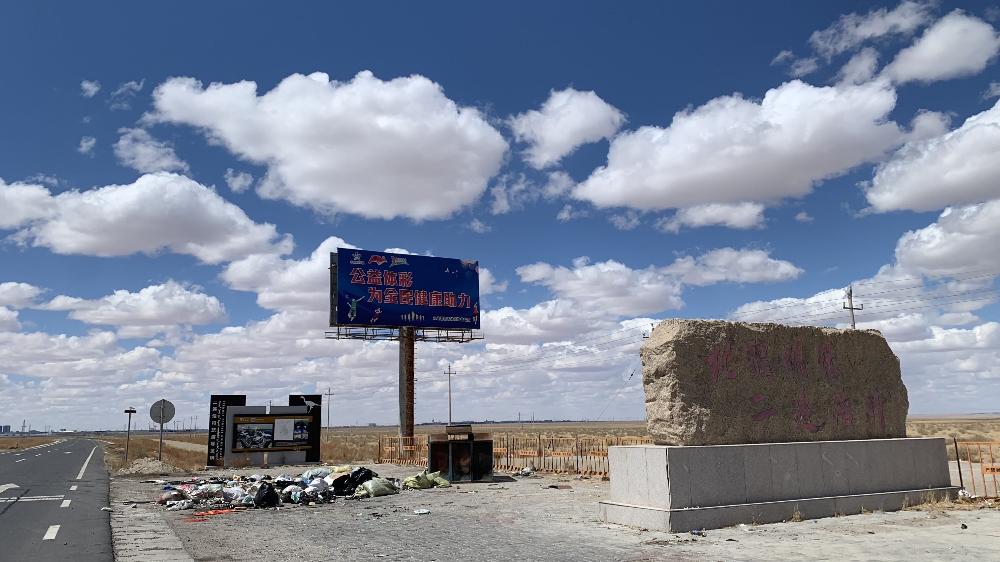
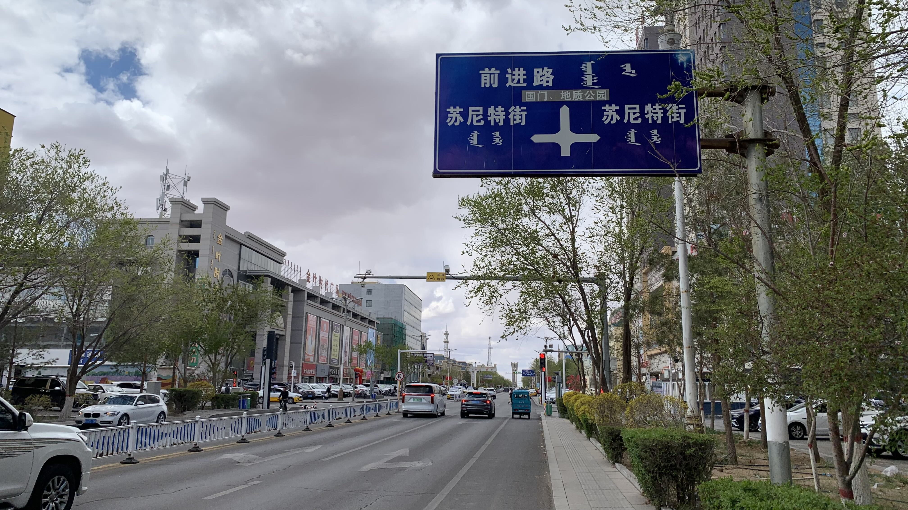
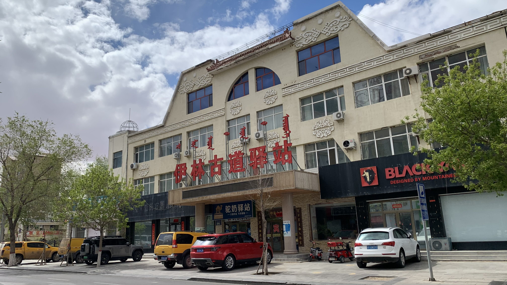
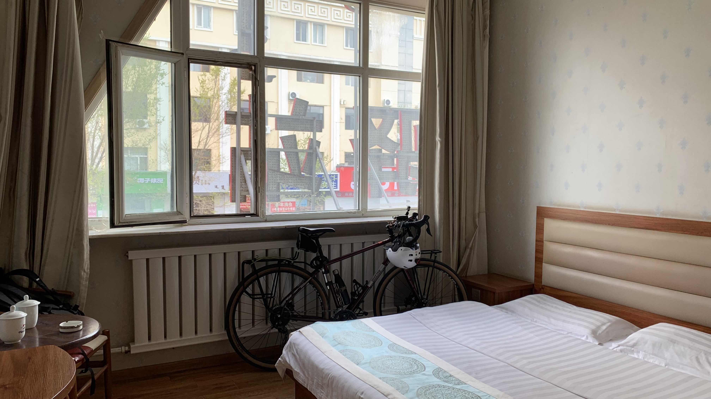

k-Day 059｜國門
昨晚大姐邀請我一起吃早餐，收拾行李後七點準時敲門走進管理室。

剛坐下沒多久，加油站站長和員工也走了進來。早餐有大姐自己熬的奶茶、奶皮子、奶豆腐、自己炸的蒙古果子，以及北京核桃酥及另一個沒見過的糕點。
奶豆腐和奶皮子很像法國吃的各式新鮮乳酪，相當合胃口。自熬奶茶跟先前餐廳喝的也不一樣，香味更濃郁，裡面也有固體狀的軟質乳酪。本來大叔說吃不慣的話就吃核桃酥，結果喝了四碗奶茶。乳酪這種高級品不好意思多吃，應該是特地帶來給大叔留著吃的。
席間聊到大家的故鄉，站長是錫林浩特人、員工是克旗的，他們說我的路線就是沿著他們家鄉走過來。
既然有個台灣人在場，不免俗的話題自然轉向歷史的部分。員工先提起台灣狀況，說他從這邊的歷史上學到台灣應該從元朝就是中國的。在我澄清康熙皇帝的霸業後，站長補充：「在這以前應該就像金三角，大家在那做生意，沒有真的政權。」
試著繞開近代問題，我插了話說：「以我自己的觀點，雖然我不代表台灣人，但我可以說說台灣是誰的。」
沒想到此話一出，原本七嘴八舌的房間安靜了下來，四個人都在等我開口。
頓了兩秒，我說：「我覺得台灣是大清帝國的。」大家聽完都笑了，站長說：「真要這麼說也沒毛病。」順手拿出一包菸就開始分送。
正藍旗的兩位顯然必須同意這樣的說法。
克旗員工又說：「現在清朝沒了啊，既然被統治過，那也都算是中國的。」
「按這說法，整個歐亞大陸有一半都是蒙古人了。當時中國還是被殖民的呢，所謂元朝是中國朝代也只有台灣和中國這麼想，在法國可不會有人覺得成吉思汗是中國人。」站長說：「他們外國人這麼說也有道理。」
就這樣，錫林郭勒盟境內，蒙族漢族與台灣人達成共識。
席間從兩岸民生政治，蔣介石是軍閥還是土匪，大清為何無法效仿明治維新的成功，到中國一帶一路是真的援助還是自己想賺錢，大家在煙霧瀰漫的小房間裡討論得熱火朝天。
直到過了八點半，三位要準備開工，我也要起身出發。站長說：「這樣和中國人民聊天也不錯吧？」員工則在離去前說：「我們學的都是這裡教的歷史，你別太介意。中國有很多好人，也有壞的，你在路上也小心。」
見兩人走出門外，我和大姐說：「如果你們願意的話可否留個地址和聯絡方式呢？我想到巴黎的時候給你們寄些紀念品，謝謝你們請我吃飯還給我地方住。」
大姐留下了正藍旗家中的地址和電話，說：「我叫薩日娜，蒙語是山丹花的意思。是高原上紅色的很漂亮的花。」
此時站長在門口說：「你不如多留一天，我們晚上要吃烤羊呢！」大姐也順著話說，不如多待一天吧？
「今天早晨是順風，還是得早點出發，怕明天大風不好走。」大姐說：「我給你留的電話要是你不能打就發信息，我能收到。以後到正藍旗也可以打電話。」又請大叔幫我倆拍張照片，說：「多難得的緣分。」
謝過大家後，和準備工作的大叔告別。騎上二十三號，往真正的國門移動。
怎麼說是真正的國門呢？我心裡已經把這個休息站的餐桌當成國門了。

早上起床時大叔說今天風大，但是往我要去的方向吹。果真不錯，中午前都是東南風。

一路上除了草，只有幾隻遠方米粒大小的駱駝。

有些草已經轉成青色，被雲遮擋的地表上有大片陰影。陰影的移動速度很快，風力驚人。

風開始轉向，沙土往臉上打，坐在地上啃黃油餅咬起來都是沙子的口感。

這裡是風的來處，馬兒們吃著飼料不覺得困擾嗎？

下午兩點抵達二連浩特，經過刻著「北疆明珠」的石頭，再看看地上發臭的一大灘垃圾和碎酒瓶。今天心情愉悅，繞過它就是了。

進城之前會看到二連口岸和市區的路標，今天國門沒開，因此直接進城。

找到一間叫做「伊林古道驛站」的旅店，原來二連以前叫「伊林」，是歐亞大陸貿易的重要據點。蒙文原意是「斑駁、雜色」的意思，可能來自這裡的草原與戈壁交錯所呈現的地表紋理。據說清代設立了伊林驛站，因此有了這樣的翻譯。

旅店老闆讓我把車牽進房，房價便宜，明天也許可以花錢去洗浴中心搓澡，已經六天沒洗澡了。
回想今早的對話，實在相當有趣。為了保障大家的生命安全，大部分內容可不適宜公開，只能分享些笑點。
在最後幾天收穫這麼多有趣又友善的人，前面幾週受的苦都值得了。
今日花費： 晚餐 70、住宿 53元